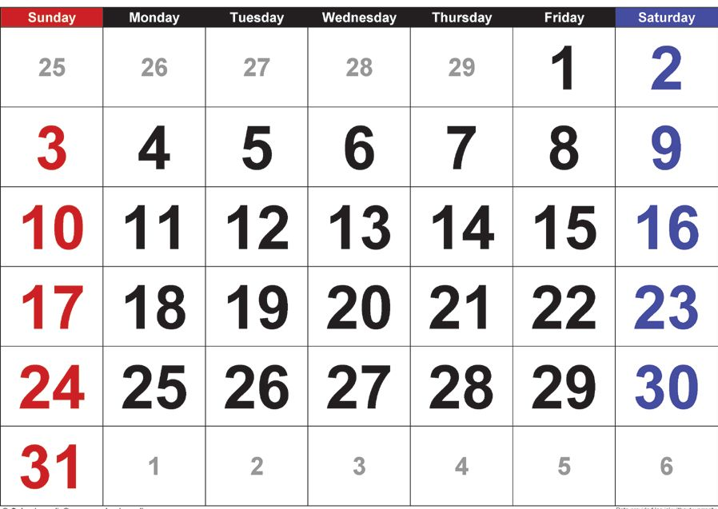

Write the next times that the digital clock shows.
Did you note the times in the above pictures? What all things did
you understand?
What is the time shown after 9 hours 29 minutes and 59 seconds?
........ hours ....... minutes ....... seconds
What is shown after 29 minutes
and 59 seconds? 30 minutes
60 Seconds
1 Minute
What did you get from this?
What I understood
Seconds and minutes
Nidhi At School
Look at the time Nidhi reached school.
How much time did she travel to reach school?
Race Walking
The digital clock shows the time
when the race walking started.
10:30:00
See the time at which the children finished the race.
Name
Mili
Tanu
Saya
Time
10:31:32
10:31:25
10:31:12
Nidhi
10:31:29
Ayana 10:31:15
How do we know
who is in
the first place?
Look at the
time in the digital
clock.
The time when Mili reached the finish
....... hours ....... minutes ....... seconds
How much time did she take to finish ....... minutes .......seconds?
Who finished the race in least time?
How much time?
Second is a
shorter time
than a minute.
Write in order the names of those who finished first, second and
third
,
,
You can also do a race
And calculate the time each took to finish.
66
How much time is needed to count?
Write in table how much time your friends took to count to 50
Name
Time
Minimum time to count
Maximum time to count
67
Page 68
Figure fig_ch05_p068_01 (Page 68)
Mathematics
Standard - IV
My Time
Write the things you can do in one minute:
•
•
•
•
•
•
Walk And Time
The time you take to walk all
around the classroom, right beside
the walls.
Find using a stopwatch
Round the clock
Round and round the clock
Goes the hour hand
Two rounds full makes the
whole day
Round and round the clock
Goes the minute hand
How many rounds in all to
make a full day?
Puzzle Corner
Look at the number below.
101
What is the largest number that can be
formed by changing the position of just
two lines?
In 1 0 1 , one line from zero is shifted to the middle of zero.
What do we get?
From Start To Finish
See the picture. Start drawing the picture without lifting the pencil till finished. Also don't draw on the line already drawn. How
much time did you take to draw?
............... Seconds
Start from
a corner.
Let’s Make A Clock
The children in Nidhi’s class are making clocks.
Keep the clock
you make in your
math box.
Write in minutes the time taken to make the clock.
.................. Minutes
Wow!
2 hours
= 120 minutes!
= 7200 seconds!!
See the clock Nidhi made ...
Time taken for the second hand
to move from 9 to 12 is ............
seconds
Write the time shown by the clock ................. hours............
minutes ......... seconds
Time taken by the hour hand
to make one rotation?
................... hours.
What about the minute hand?
................... hours.
The longest
and thinnest
hand of the
clock is the
second hand.
And the second hand?
................... minutes.
Which is the fastest moving hand of the clock?
Little Drops...Mighty Ocean
Each second, one millilitre of water
leaks out of this tap.
How many millilitres of water will
leaks out in 10 minutes?
Don't
waste water
How I calculated
Only Seconds!
Time taken by second hand to reach 1
from 12.
Time taken by second hand to reach 2
from 12.
In 15 seconds the second hand moves
from 12 to what number?
Time taken by the second hand to complete half a circle.
Cooking Competition
At the school reunion, they made different
kinds of payasam.
The clock shows the time all started
cooking.
I finished in
2 hours and 10
seconds.
20 minutes
and 45 seconds
before 2 hours
I finished cooking.
I needed only 132
minutes and
35 seconds.
I needed
1 hour, 50 minutes
and 25 seconds.
Mark on the clock beside each, the time at which they finished.
The maximum time taken for cooking
Notice Board
December 22
National Mathematics Day
The competitions in connection with National Mathematics Day celebrations will be conducted on
20.12.2025. Those who wish to participate must give
their names to the class teacher before half past one
today.
Competitions 15.12.2025
• Math Quiz • Math Puzzles
20.12.2025
• Pattern Making
Dates are written
in the order
date, month, year.
In some countries it
is written in the order
month, date, year.
What is the last date to give names?
The sub-district competitions are on 1.1.2026
• How many days after the school competitions are the
sub-district competitions held?
74
Page 75
Figure fig_ch05_p075_01 (Page 75)

Figure fig_ch05_p075_02 (Page 75)
It's Time
Find From The Calendar
• Look at this year’s calendar. Which day of the week is
December 22?
• March 28 is a Thursday. What day was March 11?
Today is a Sunday. What day will be the 24th day from today?
Calendar Math
Three sets of numbers are marked on the calendar. See any
relation between the numbers in each set? Write down in your
notebook.
Continue the pattern.
• 3, 10, 17, –––, –––
• 4, 12, 20, –––, –––
• 2, 8, 14, –––, –––
What I found out
• See if you can find more patterns in the calendar.
75
1 The sight seeing trip started at 5:30 in the morning from
Nidhi’s school. After visiting several places, they came back
at 5:30 in the evening. How much time did the trip take?
2 To move from 7 to 3, how much time will the hour hand take?
3 Time taken by the second hand to reach 11 from 5 is ..........
seconds. This is ........... minutes.
4 Two hours before, the time was half past mine. What will be
the time after three and half hours?
5 The first Friday of January is on the 2nd. Which are the other
dates which are Fridays?
6 If the seventh of a month is a Thursday, what day is the
seventeenth? What day is the 27th?
7 Write the time...
.............. hours